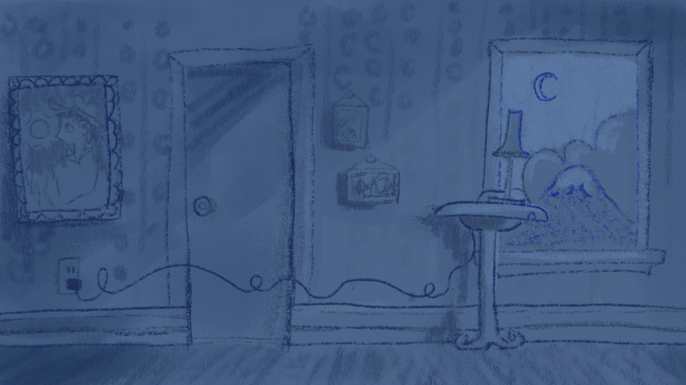
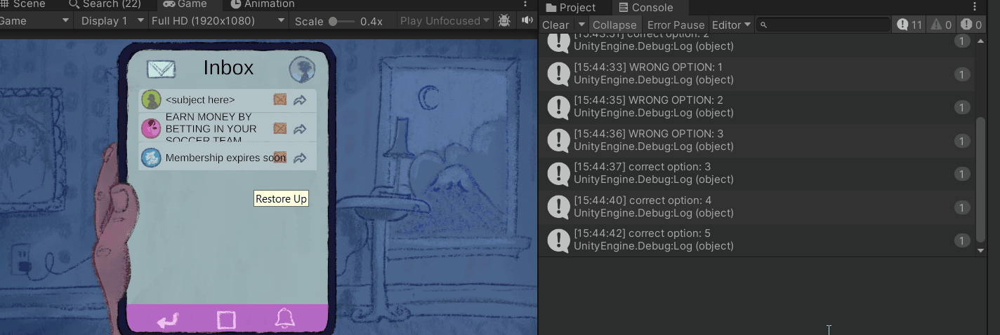
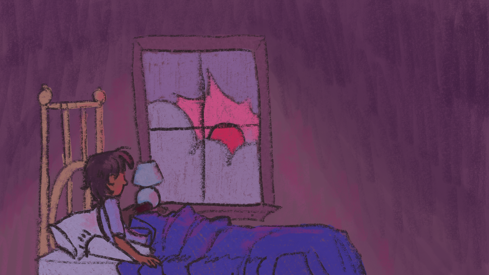

Screen time! TOjam 2025
Role: Game Designer, Narrative designer, junior programmer
Development duration: 3 days
Team size: 4 developers + 1 special mention
Email for contact: bruno.barbosa8@yahoo.com
Game Link: https://t4lynn.itch.io/screen-time
Gameplay video : https://youtu.be/PKJISZvAEIM
Screen time! is a game developed in around 60 hours for the TO game jam 2025 "The more you have the worse it gets"

Brainstorming
For the game brainstorming we decided to throw as many themes as possible. The one that resonated with people the most was "Social media apps" which I had proposed. While I pitched for another theme Social media apps resonated the most with the team. We ended up attempting to create a game that would critique the current state of youth who go to sleep later and later due to being prisoners of the dopamine release of the apps.
Contributions
Designer
For this project everyone in the team took the role of game designer and we voted trough the decision to see what resonated with the team the most while trying to keep to the critique of social media apps. For this Project I helped design the mini games for each app and design an extra app that had to be scrapped due to time limitations.
Narrative Designer
The narrative direction was heavily inspired by the art style. In the beginning going with a more pixel art due to time limitations we shifted it for something similar to Jack box games.

Due to this shift I decided to take the narrative to a more fun and parody side, focusing on exaggerating real life aspects and make fun of more famous titles and bigger corporations

(Screeshot from game showcasing some of the possible emails at the notification screen)
And here is a list of the dialogue options, while I am sharing them I highly encourage to find them in to have full enjoyment and get a few laughts out of it
Link to all dialogue
Junior programmer
In this project I was in charge programing one of the mini games for the project. I chose to work on the emails mini game

(GIF taken during the development of the mini game showcasing the basic functionality of email mini game)
In this project I had the opportunity to learn more about scriptable objects and how they function. All of the information in the emails were taken out of scriptable objects, this made me realize how inportant they are and how useful the can be. Now I realize how they can be used for a variety of things such as stats and attributes of enemies or players, settings for level parameters and the best use at Events.
Learnings
Game jam
Programing
After my first successful game jam I learnt how game hams put your abilities to use.
While I never saw myself a good programmer and thought that game jams wouldn't be the best way of developing my skills I was very wrong.
Being able to learn from experienced programmers new tricks and receive feedback on my code from them was overall a good experiences
Scope
This game jam showcased to me how the smallest systems can take so much work and time. This was especially proven to me on how simple our minigames ideas were we still struggled to fit any more then the minimum we agreed on due to how overarching system took so much time
Using Learnt Knowledge
In this game jam one thing I was happy to be able to use is notes taken one of IGDA's talks in which developers from Lil guardsmen talked about what makes something funny. I was finally able to use the lesson thought by them in the narrative to create something fun and enjoyable
Ending
And with that To jam 2025 concludes, thank you for reading trough my devlog and feel free to reach out at: Bruno.barbosa8@yahoo.com for emails.
